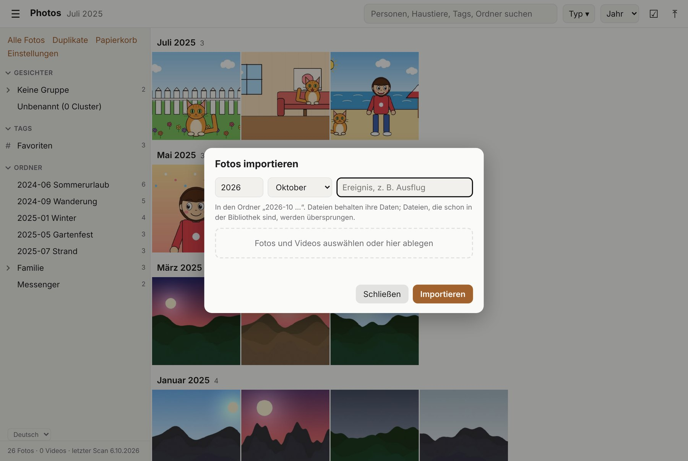

Was shoebox kann
Eine Seite im Browser, eine Zeitleiste von allem auf dem Laufwerk.
-
Zeitleiste
Alle Fotos und Videos nach Monat, mit Jahressprung, Ordnerbaum und einer Ansicht mit Infos zum Foto.
-
Suchen & Filtern
Tippe eine Person, ein Haustier, einen Tag oder Ordner. Kombiniere Schlagwörter für eine komplexere Suche. Filter nach Fotos, Videos oder Live Photos, oder zeige nur deine Favoriten ♥.
-
Tags
Eigene Tags für viele Fotos auf einmal. Auch Ordner zählen als Tags. Im Index gespeichert, nie in den Fotos.
-
Verschieben & ordnen
Fotos in einen Ordner verschieben (wird bei Bedarf angelegt). RAW-, Live-Photo- und Sidecar-Dateien wandern mit.
-
Importieren
Die Fotos eines Ereignisses auswählen oder ins Fenster ziehen: Sie landen in einem neuen Ereignisordner und behalten ihre Daten.
-
Duplikate
Findet identische, verkleinerte, bearbeitete und ähnliche Fotos. Du prüfst; die beste Kopie bleibt immer.
-
Sicherer Papierkorb
Gelöschte Fotos landen in einem Papierkorb auf dem Laufwerk. Zurücklegen oder endgültig löschen.
-
Personen & Haustiere
Optionale Erkennung gruppiert Gesichter, Katzen und Hunde. Du vergibst Namen, shoebox schlägt den Rest vor.
-
Mehrere Laufwerke
Die Fotos mehrerer Laufwerke in einer gemeinsamen Zeitleiste durchstöbern, auch wenn sie auf verschiedenen Platten liegen. Backups werden erkannt und geprüft.

Die Oberfläche im Überblick
Alles ist auf einer Seite. So findest du dich zurecht.
 1
2
3
4
5
6
7
8
9
10
1
2
3
4
5
6
7
8
9
10
-
Ordner-Menü
☰ blendet die Seitenleiste auf schmalen Bildschirmen ein oder aus.
-
Suchfeld
Personen, Haustiere, Tags und Ordner; mehrere wählen, um sie zu kombinieren.
-
Typ
Nur Fotos, Videos oder Live Photos zeigen.
-
Favoriten ♥
Nur die Fotos zeigen, die du mit einem Herz markiert hast. Auch zu finden, wenn du favorit ins Suchfeld tippst.
-
Jahr
Direkt zu einem Jahr springen.
-
Auswählen ☑
Fotos zum Verschieben, Taggen oder in den Papierkorb wählen.
-
Importieren ⤒
Fotos und Videos von diesem Computer oder vom iPad hinzufügen.
-
Schnellzugriff
Alle Fotos · Duplikate · Papierkorb · Einstellungen.
-
Ordner
Deine Ordner mit Anzahl. Tags, Gesichter und Laufwerke erscheinen hier, sobald es sie gibt.
-
Zeitleiste
Monate mit Anzahl. Ein Klick auf ein Foto öffnet die Ansicht.
-
Sprache & Status
Zwischen Deutsch und Englisch wechseln; Scan-, Vorschau- und Laufwerksstatus.
Ein typischer Ablauf
Laufwerk anstecken und Start shoebox doppelklicken. Scannen (geht schnell, wenn sich wenig geändert hat) und die Foto-App öffnen. Die Fotos eines Ereignisses importieren: auswählen, das Ereignis benennen, und shoebox legt den Ereignisordner an. Dann taggen und sortieren. Ab und zu die Duplikate ansehen und nach jedem Backup die Backup-Prüfung laufen lassen.
In drei Schritten loslegen
macOS, Intel (ab 10.13) und Apple Silicon. Nichts zu installieren.
-
Aufs Laufwerk legen
shoebox-macos.tar.gz aus dem Release entpacken. shoebox-macos und Start shoebox.command in den obersten Ordner deines Foto-Laufwerks kopieren (neben deine Fotoordner). Optional: den Ordner recognizer für Gesichter. Das Archiv enthält auch dieses Handbuch im Ordner guide.
-
Starter öffnen
Start shoebox.command doppelklicken. Ein Terminal-Fenster öffnet sich (offen lassen) und der Starter erscheint im Browser. Fragt macOS nach, die Datei per Rechtsklick mit Öffnen starten.
-
Scannen, dann öffnen
Laufwerk hinzufügen (anklicken oder
/Volumes/MeinLaufwerktippen), Scannen drücken, dann Foto-App starten. Der erste Scan liest jede Datei einmal und dauert bei großen Laufwerken eine Weile; später werden nur Änderungen angesehen. Nach dem Scan listen die Reiter Verschoben, Geändert, Fehlend und Schon auf dem Laufwerk (jeweils mit Anzahl) genau auf, um welche Dateien es geht; bei neuen Dateien, die du schon hattest, steht die ältere Kopie gleich daneben.
Aufgaben im Starter
- Scannen
- neue, verschobene und geänderte Fotos finden
- Prüfen
- prüfen, dass nichts verloren oder beschädigt ist
- Erkennen
- Gesichter finden (mit „Haustiere erkennen“ auch Katzen und Hunde)
- Backup-Prüfung
- ist der 2. Ordner eine vollständige Kopie des 1.?

Gut zu wissen
- Videos bekommen Vorschaubilder, wenn ein statisches ffmpeg neben dem Programm liegt (
.shoebox/bin/ffmpeg). Ohne holt sich der Browser ein Bild. - shoebox legt Index und Vorschaubilder im versteckten Ordner
.shoeboxauf dem Laufwerk ab. Das Laufwerk kann also an einen anderen Computer umziehen. - Schließt du das Terminal-Fenster, beendet das shoebox.
Die App spricht Deutsch und Englisch: Die Sprache wählst du unten in der Seitenleiste.
Stöbern und ansehen
Durch die Zeitleiste scrollen, nach Jahr springen, ein Foto öffnen.
Zeitleiste
Fotos sind nach Aufnahmedatum gruppiert, neueste zuerst. Das Menü Jahr springt; die Monatsüberschrift zeigt, wo du bist. Ein Foto ohne Aufnahmedatum nimmt den Monat aus dem Namen seines Ereignisordners (2020-07, 2020.07, 20-07 oder 20.07), sonst das frühere von Erstellungs- und Änderungsdatum der Datei; das Infofeld markiert das Datum dann als geschätzt.
Ordner
Die Seitenleiste spiegelt die Ordner deines Laufwerks. Ein Klick zeigt nur dessen Fotos. Einen Ordner kannst du über seinen Chip umbenennen oder verschieben.
Ansicht
Foto anklicken. ⓘ öffnet das Infofeld: Datum (als geschätzt markiert, wenn es nicht der Aufnahmetag ist), Kamera, Größe, Tags, Personen und Knöpfe, um den Ordner zu öffnen oder den Pfad zu kopieren.
Favoriten
Das ♥ in der oberen Leiste der Ansicht oder die Taste f markiert das Foto als Favorit. In der Zeitleiste sitzt dasselbe Herz oben rechts in jedem Foto (es erscheint, wenn du mit der Maus darüberfährst; Favoriten zeigen es immer). Noch einmal klicken nimmt es wieder weg. Intern ist ein Favorit einfach dein eigener Tag favorite, im Index gespeichert wie jeder Tag, nie im Foto.
Drehen
r dreht nach links, Umschalt+R nach rechts. Bei JPEGs ändern sich nur die zwei Bytes der Drehmarke; bei anderen Formaten gilt die Drehung nur in shoebox.

Tastatur in der Ansicht
- ← →
- vorheriges / nächstes
- i
- Infofeld ein- / ausblenden
- Leertaste
- Ansicht öffnen / schließen (bei einem per Pfeiltasten gewählten Foto)
- f
- zu Favoriten hinzufügen / entfernen
- r · Umschalt+R
- nach links / rechts drehen
- Esc
- Ansicht schließen
Finden und ordnen
Suchen, auswählen, taggen und verschieben: alles geht für viele Fotos auf einmal.
Suchen
Tippe ins Suchfeld: Vorschläge erscheinen für Tags, Personen und Ordner. Mehrere gewählte werden zu Chips, die das Ergebnis eingrenzen; × entfernt einen, Alle entfernen beginnt neu. Deine Favoriten findest du mit dem ♥-Knopf neben Typ, oder tippe favorit (deutsch) bzw. favorite (englisch) und wähle ♥ Favoriten; das lässt sich mit allem anderen kombinieren, z. B. Favoriten einer Person oder eines Jahres.
Auswählen
☑ drücken, dann Fotos anklicken (mit Umschalt für einen Bereich; am iPad einfach tippen). „Alle auswählen“ an einer Monatsüberschrift nimmt den ganzen Monat.
Taggen
Tag hinzufügen … gibt der Auswahl deinen eigenen Tag. Tags leben im Index von shoebox, nie in den Fotodateien.
Verschieben
Verschieben … fragt nach einem Ordner. Neue Ordner werden angelegt, nichts wird überschrieben, RAW-, Live-Photo- und Sidecar-Dateien wandern mit. Die eigenen Tags der Fotos gehen immer mit. „Ordnertags behalten“ behält zusätzlich die Tags des alten Ordners als eigene Tags; Ordner-Tags folgen immer dem neuen Ordner.


Import, Duplikate und Papierkorb
Importieren
⤒ drücken (oder Dateien aufs Fenster ziehen). Jahr, Monat und Ereignisnamen wählen: shoebox legt den Ereignisordner JJJJ-MM Ereignis an, die Dateien behalten ihre Daten, und Dateien, die schon in der Bibliothek sind, werden übersprungen. In den Einstellungen wählst du, wie neue Ereignisordner heißen: 4 oder 2 Ziffern für das Jahr, Bindestrich oder Punkt zwischen Jahr und Monat, und Leerzeichen, _, ., - oder nichts vor dem Namen, zum Beispiel JJ.MM_Ereignis. Vorhandene Ordner werden nicht umbenannt, und alle diese Formen werden erkannt.
Duplikate
Duplikate zeigt vier Arten: identisch, dasselbe Foto in anderer Größe, Original und bearbeitet sowie Ähnliche. Hake diese Kopie löschen bei dem an, was weg soll; die beste Datei bleibt, und pro Gruppe bleibt immer mindestens eine. Tags und Aufnahmedatum einer entfernten Kopie gehen auf die übrige über.
Abkürzungen
Kopien im selben Ordner entfernen und Kopien geringerer Qualität entfernen räumen die eindeutigen Fälle in einem Zug auf.
Schaltflächen einer Gruppe
Jede Gruppe hat oben rechts Schaltflächen. Sie sagen: Ich habe die Gruppe angesehen und will nichts löschen; shoebox merkt sich das, die Gruppe kommt nicht wieder. Sie unterscheiden sich je nach Art: Alle Kopien behalten (identische Fotos: die Kopien bleiben mit Absicht), Alle Versionen behalten (dasselbe Foto in anderer Größe), Beide behalten (Original und bearbeitet). Bei Ähnlichen gibt es zwei: Verschiedene Fotos (eigene Aufnahmen, gar keine Duplikate) und Versionen eines Fotos (dieselbe Aufnahme, als Versionen behalten). Klicke ein ähnliches Foto an, um sie groß zu vergleichen, und wähle Dieses behalten: nach der Bestätigung kommen alle anderen in den Papierkorb.
Papierkorb
Nichts wird sofort gelöscht. Gelöschte Fotos warten in .shoebox/trash auf dem Laufwerk: Zurücklegen oder Endgültig löschen.



Personen und Haustiere
Optional: shoebox findet Gesichter, Katzen und Hunde; du vergibst die Namen.
Finden
Einmal den Recognizer installieren (recognizer/install.sh /Volumes/MeinLaufwerk). Dann die Foto-App schließen und im Starter Erkennen (und Haustiere erkennen) ausführen. In der Seitenleiste erscheint der Bereich Gesichter.
Benennen
Unter Unbenannt zeigt shoebox Karten mit ähnlichen Gesichtern. Einmal einen Namen eintippen, und die ganze Karte ist benannt; später Vorschläge bestätigen (✓) oder ablehnen (✗). Personen gruppieren, zwei Karten einer Person zusammenführen, Fremde mit Ignorieren markieren.
In der Ansicht
Das Infofeld nennt, wer auf dem Foto ist, und zeichnet um jedes Gesicht oder Tier einen Rahmen. Ein Klick auf einen Namen zeigt alle Fotos der Person; ein übersehenes Gesicht oder Tier kannst du mit einem Rahmen markieren.
Suchen
Namen funktionieren im Suchfeld wie Tags, ebenso Arten wie „alle Katzen“. Kombiniere eine Person mit einem Tag, einem Ordner oder einer weiteren Person.
Neue Fotos
Die Erkennung startet nach einem Import noch nicht von selbst. Foto-App schließen und Erkennen erneut ausführen: Es werden nur die neuen Fotos angesehen.


Die Beispielbilder sind gezeichnete Comics, keine echten Fotos.
Laufwerke, Backups und das iPad
Mehrere Laufwerke
shoebox mit mehr als einem Laufwerk starten, und jedes erscheint in der Seitenleiste. Alle Laufwerke zeigt eine gemeinsame Zeitleiste über alle, dazu Backups, Fotos auf mehreren Laufwerken und Personen laufwerksübergreifend. Ein abgestecktes Laufwerk steht als offline da.
Backup-Prüfung
Erst das Original wählen, dann das Backup. shoebox vergleicht die beiden Indizes (kein Foto wird gelesen) und listet, was noch nicht auf dem Backup ist, was abweicht und was nur auf dem Backup liegt. Auch das Backup neu lesen findet Bitfäule.
iPad & andere Geräte
Im Terminal: shoebox serve /Volumes/MeinLaufwerk --lan. Es zeigt eine Adresse und eine PIN; die Adresse in Safari im selben WLAN öffnen und die PIN einmal eingeben. In der Ansicht wischen, zum Auswählen tippen.
Kommandozeile (optional)
shoebox scan <Ordner>- neue, verschobene und geänderte Dateien indexieren
shoebox verify <Ordner>- Dateien neu lesen und mit dem Index vergleichen
shoebox recognize <Ordner> [--pets]- Gesichter (und Haustiere) finden
shoebox backup <Original> <Backup>- ist das Backup vollständig?
shoebox serve <Ordner> [--lan] [--pin …]- die Foto-App öffnen

Deine Fotos sind sicher
Die Grundregel ist einfach: shoebox liest deine Originale und schreibt nie etwas hinein.
-
Nur lesen
Metadaten, Vorschaubilder und Tags liegen im Index auf dem Laufwerk, nie in einem Foto. Aufnahme- und Erstellungsdatum ändern sich nie.
-
Bewacht
Jeder Scan wird kontrolliert: Größe, Daten und ein vollständiger Hash davor und danach. Jeder Unterschied ist ein Fehler.
-
Nur auf deinen Befehl
Originale ändern sich nur durch deine Aktionen: verschieben, umbenennen, Papierkorb, importieren. Immer ein Umbenennen, nie ein Kopieren, und nur wenn die Datei noch zum Index passt.
-
Lokal
Keine Cloud, kein Konto. Standardmäßig kann sich nur dieser Computer verbinden; andere Geräte brauchen
--lanund eine PIN.
Wenn etwas komisch aussieht
Das Raster ist leer. Erst im Starter Scannen, dann die Foto-App starten.
Neue Fotos fehlen. Noch einmal scannen. Das geht schnell: nur neue und geänderte Dateien werden gelesen.
Ein Video hat keine Vorschau. ffmpeg hinzufügen (siehe „Gut zu wissen“) und die Foto-App neu starten.
Das iPad verbindet sich nicht. Selbes WLAN? Mit --lan gestartet? PIN aus dem Terminal eingeben. Nach einem Neustart von shoebox fragt es wieder nach der PIN.
Ein Laufwerk steht auf offline. Wieder anstecken; shoebox findet es beim Neuladen.